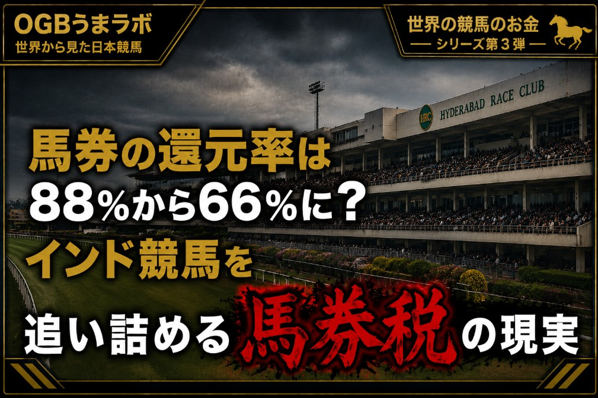

この記事はXに掲載された当時の原文です。情報は掲載時点の内容です。
【海外競馬ニュース】
馬券の還元率が88％から66％へ？
インド競馬を追い詰める“馬券税”の現実
インド競馬専門メディアのレーシングパルス（Racing Pulse）は「ブリーディング・ザ・トート（Bleeding the Tote）：GSTが競馬を締め上げる（GST Strangles Racing）」と題した記事を掲載しました。
この記事では、インド競馬の正規馬券市場が、GSTによって深刻な打撃を受けていると指摘されています。
GSTとは、グッズ・アンド・サービス・タックス（Goods and Services Tax）の略で、日本でいう消費税に近い間接税です。
ただし、今回の問題は単に「税率が高い」という話ではありません。
レーシングパルスが問題視しているのは、競馬場側の利益や手数料ではなく、馬券の賭け金総額そのものにGSTが課されている点です。
インドでは近年、競馬を含む賭けに対するGSTが引き上げられ、現在は賭け金総額に40％のGSTが課されています。
増税前は28％だったので、実に12％も一気に上げた事になります。
同記事では、GST導入前には正規の馬券であるウィン・プレイス（Win・Place）の実質的な還元率が約88％だったのに対し、導入後には約66％まで低下したと分析しています。
日本の競馬ファンの感覚で言えば、100円馬券を買っても平均66円程度しか戻ってこない市場になったということです。
これでは、正規の競馬場で馬券を買う魅力が大きく落ちるのも当然でしょう。
実際、インドでは正規の馬券売上が急減しています。
タイムズ・オブ・インディア（Times of India）は、ハイデラバード競馬の公式馬券売上が2016-17年の約1,272クロールピーから、2024-25年には約142クロールピーまで減少したと報じています。
約9割もの減少です。
同紙はさらに、ハイデラバードだけでも違法ベット市場が年間2,000クロールピー規模に達しているとの見方も紹介しています。
正規の売り上げと比較すると実に馬券の売り上げの約90％が違法ブックメーカーの売上である事が分かります。
つまり、
高い税負担
↓
正規馬券の還元率低下
↓
競馬ファンの正規市場離れ
↓
違法ベット市場への流出
↓
競馬場の売上減少
↓
賞金・運営費の圧迫
という悪循環が起きていると考えられています。
ここで、日本のJRAと比較すると、その違いがよく分かります。
JRAでは、馬券売上の一定割合が払戻金となり、残りが控除されます。
JRA公式の説明では、100円の勝馬投票券を購入した場合、約75円が払戻金に充てられ、約25円が控除分となります。
その控除分のうち10円が第1国庫納付金として国に納められ、残りが賞金や競馬場の運営、施設整備などに使われます。さらにJRAに利益が出た場合には、その一部が第2国庫納付金として国庫に納められます。
つまり日本では、馬券購入額全体にインドのような高率の間接税を直接上乗せする仕組みではありません。
あらかじめ払戻率が設定され、その控除分の中から国庫納付金や運営費が配分される仕組みです。
一方、インドで問題となっているのは、ファンが投じた馬券購入額そのものが課税対象になっているということです。
この制度によって正規馬券の魅力が薄れ、利用者が違法ベットへ流れ、その結果として競馬産業全体の縮小につながっていると現地メディアは指摘しています。
実際、インドでは資金難のバンガロール・ターフクラブ（Bangalore Turf Club）がスポンサー獲得によってレースの賞金維持を図る動きも出ており、馬券収入だけでは競馬を支えにくくなっている現状もうかがえます。
このニュースが示しているのは、「税率を上げれば税収も増える」とは限らないということです。
合法市場に過度な税負担を課せば、利用者は税負担の軽い、あるいは税負担のない違法市場へ流れてしまう可能性があります。
その結果、正規市場の売上が縮小し、競馬産業そのものが弱体化すれば、最終的には政府の税収にも悪影響を及ぼしかねません。
もちろん、日本とインドでは競馬制度も税制も大きく異なります。
しかし、「どこに、どの段階で、どれだけ課税するのか」という税制設計が、合法市場を維持する方向に働くのか、それとも利用者を別の市場へ流してしまうのか。
インド競馬の現状は、その難しさを示す一つの事例と言えるのではないでしょうか。
一方、インド政府は違法ベット市場の取り締まりも強化しており、
2026年には数百の違法ブックメーカーのウェブサイトを閉鎖、ベンガルールでは違法競馬ブックメーカーの摘発も行われています。
しかし、競馬関係者からは
『競馬ファンが減ったのではなく、正規市場から違法市場へ移っただけ』
『税率を戻さない限り、いたちごっこになるだけ』
との声も上がっています。
出典：
レーシングパルス
「ブリーディング・ザ・トート：GSTが競馬を締め上げる」
2025年10月24日
タイムズ・オブ・インディア
「エンド・オブ・ザ・レース？ 過剰課税と違法ベットに追い詰められたハイデラバード競馬」
2025年6月
JRA公式サイト
「馬券のルール」
「国庫納付金」
#海外競馬 #インド競馬 #馬券税 #GST #競馬税制 #違法ベット #パリミュチュエル方式 #JRA #競馬ニュース
26.7.3
うまラボ編集部
元記事：Xで公開した記事